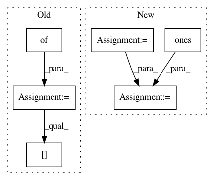

aa7322f6057dce6424af3f2245e4c45bd33af05e,scripts/speaker_embedding.py,,speaker_recognition_xp,#Any#Any#Any#Any#Any#,278
Before Change
y_true = []
y_pred = []
key_mapping = {0: None, -1: 0, 1: 1}
for i, _ in enumerate(keys.index):
for j, _ in enumerate(keys):
y = key_mapping[keys.iloc[i, j]]
if y is None:
continue
y_true.append(y)
After Change
y_pred = []
positive = D[np.where(keys == 1)]
negative = D[np.where(keys == -1)]
// untested = D[np.where(keys == 0)]
y_pred = np.hstack([positive, negative])
n_positive = positive.shape[0]
n_negative = negative.shape[0]
// n_untested = untested.shape[0]
y_true = np.hstack([np.ones(n_positive,), np.zeros(n_negative)])
return det_curve(y_true, y_pred, distances=True)
In pattern: SUPERPATTERN
Frequency: 3
Non-data size: 6
Instances
Project Name: pyannote/pyannote-audio
Commit Name: aa7322f6057dce6424af3f2245e4c45bd33af05e
Time: 2017-01-11
Author: bredin@limsi.fr
File Name: scripts/speaker_embedding.py
Class Name:
Method Name: speaker_recognition_xp
Project Name: EpistasisLab/tpot
Commit Name: 2ab8c1444facbd46df8767a5badda5b9f1a50c29
Time: 2016-08-01
Author: supacoofoo@gmail.com
File Name: tpot/tpot.py
Class Name: TPOT
Method Name: predict
Project Name: tensorflow/models
Commit Name: 4d641f7f56d4da78303c5a55846baa97d6505c86
Time: 2017-07-18
Author: derekjchow@gmail.com
File Name: object_detection/core/post_processing.py
Class Name:
Method Name: batch_multiclass_non_max_suppression